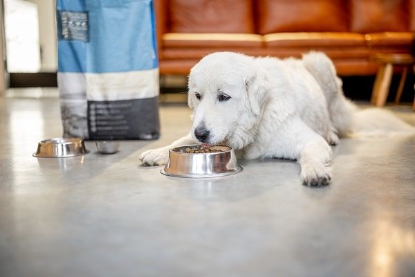
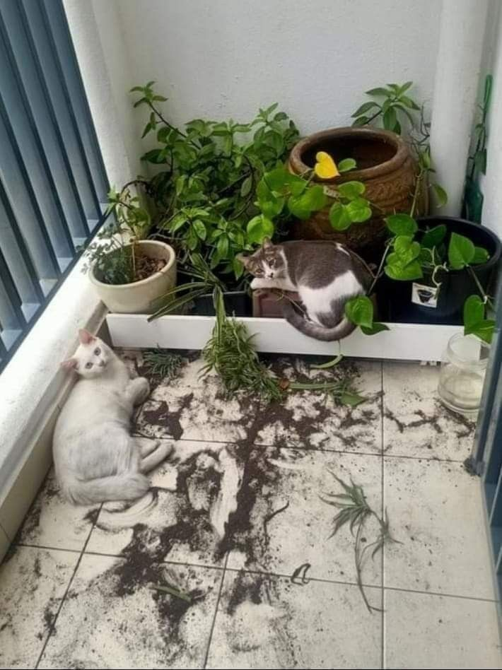
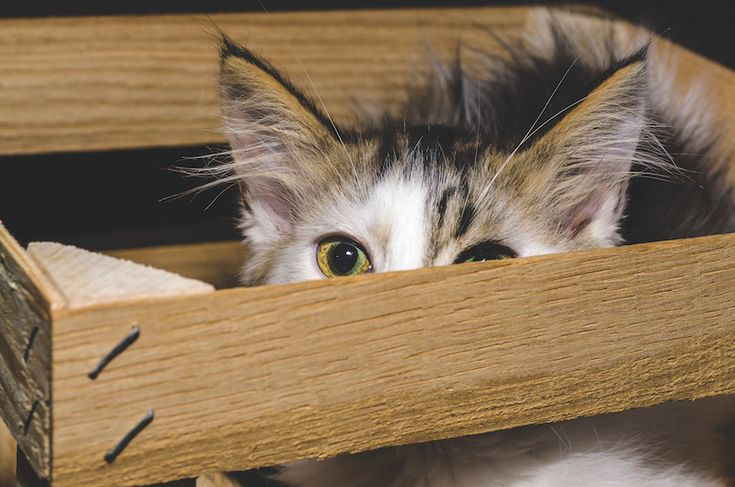
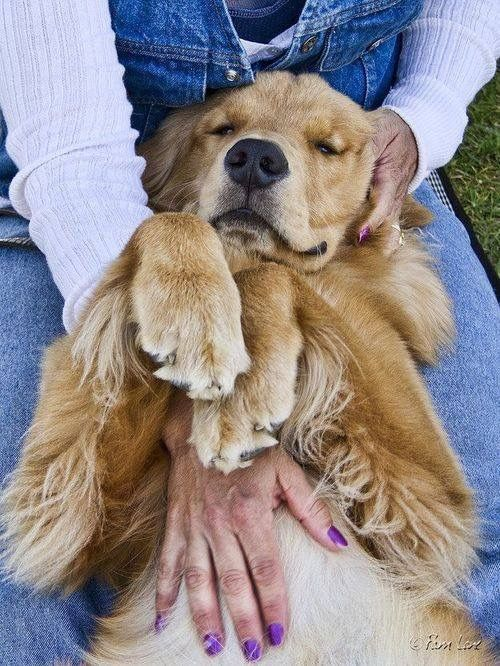
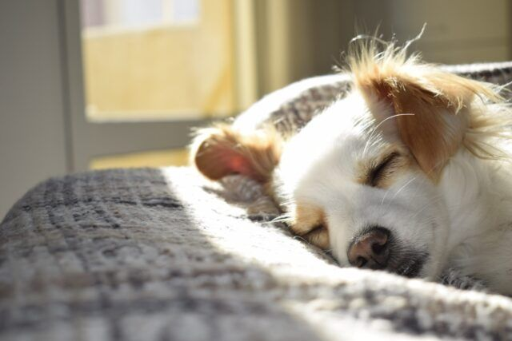

Với tư cách là người nuôi thú cưng, chúng ta thường tập trung vào việc làm chúng luôn vui vẻ, nhưng bạn có biết những bạn nhỏ này cũng có thể bị stress giống như con người không ? Thú cưng bị stress có thể dẫn đến những hành vi không mong muốn, thậm chí là gặp các vấn đề sức khỏe, và đôi khi rất khó để nhận ra. Bằng cách tìm hiểu các dấu hiệu stress phổ biến ở thú cưng và hiểu cách giải quyết, chúng ta có thể giúp thú cưng của mình cảm thấy thoải mái, an toàn hơn.
1.Thay đổi thói quen ăn uống
Nếu thú cưng của bạn đột nhiên ngừng ăn hoặc bắt đầu ăn nhiều hơn bình thường, căng thẳng thú cưng của bạn đang bị stress. Căng thẳng thường biểu hiện ở những thay đổi về cảm giác thèm ăn của chúng. Một số thú cưng có thể mất cảm giác thèm ăn và trở nên kén ăn, trong khi những con khác có thể ăn quá nhiều như một cách để đối phó. Những thay đổi trong thói quen, môi trường mới hoặc thậm chí những thay đổi trong sinh hoạt gia đình có thể là nguyên nhân gây nên.

Giải pháp :
- Hãy thử các loại đồ ăn nhẹ làm dịu đặc biệt hoặc các công thức giảm căng thẳng dành cho thú cưng. Thực phẩm có thành phần như rễ cây nữ lang, hoa cúc hoặc L-theanine có thể thúc đẩy sự thư giãn.
- Hãy cố gắng cho thú cưng ăn vào cùng một thời điểm mỗi ngày và đảm bảo môi trường của chúng luôn yên tĩnh và nhất quán.
- Nếu thú cưng của bạn bắt đầu ăn quá nhiều do căng thẳng, hãy cố gắng kiểm soát khẩu phần ăn và tránh cho chúng ăn thức ăn thừa trên bàn, vì điều này có thể khiến vấn đề trở nên tồi tệ hơn.
2. Chải chuốt, liếm lông quá nhiều
Nhiều vật nuôi, đặc biệt là mèo và chó, thường xuyên tự chải chuốt. Tuy nhiên, khi vật nuôi bắt đầu liếm hoặc cắn lông quá mức , thì đó có thể là dấu hiệu cho thấy chúng đang bị stress. Hành vi này thường là một cơ chế đối phó, vì liếm giải phóng endorphin, giúp động vật kiểm soát căng thẳng tốt hơn.
Giải pháp :
- Cho thú cưng chơi đồ chơi giảm stress. Những món đồ chơi tương tác có thể giúp thú cưng của bạn tập trung, giảm nhu cầu tự chải chuốt để giải tỏa căng thẳng.
- Dùng vòng cổ hoặc bình xịt làm dịu mô phỏng mùi hương dễ chịu của mẹ chúng
- Mát-xa nhẹ nhàng hoặc dành nhiều thời gian âu yếm có thể giúp thú cưng của bạn được an ủi, giảm bớt lo lắng.
3. Hành vi phá hoại
Căng thẳng thường dẫn đến các hành vi phá hoại như nhai đồ đạc, đào bới sân hoặc cào đồ nội thất. Thú cưng có hành vi này khi chúng cảm thấy buồn chán, lo lắng hoặc thất vọng. Đặc biệt, chó có xu hướng nhai như một cách để tự xoa dịu, trong khi mèo có thể cào để đánh dấu lãnh thổ của chúng, đặc biệt là khi chúng bị stress.

Giải pháp :
- Đảm bảo thú cưng của bạn có đủ hoạt động thể chất để đốt cháy năng lượng tích tụ. Thời gian vui chơi thường xuyên hoặc đi bộ đường dài có thể giúp giảm căng thẳng.
- Cung cấp đồ chơi nhai hoặc trụ cào. Đối với chó, hãy cung cấp nhiều loại đồ chơi nhai; đối với mèo, hãy đảm bảo có trụ cào để thỏa mãn bản năng của chúng.
- Tạo một không gian yên tĩnh, an toàn nơi thú cưng của bạn có thể lui tới khi cảm thấy quá tải.
4. Né tránh, trốn vào một góc
Thú cưng gặp stress có thể né tránh khỏi các tương tác và tìm kiếm những nơi chúng cảm thấy an toàn, ví dụ như dưới đồ nội thất hoặc trong phòng biệt lập. Hành vi này có thể đặc biệt phổ biến ở mèo và chó nhỏ, những loài có thể cảm thấy choáng ngợp bởi các kích thích bên ngoài như tiếng ồn lớn hoặc người lạ.

Giải pháp :
- Đảm bảo môi trường nhà bạn đủ yên tĩnh và không có tiếng ồn lớn. Nếu thú cưng của bạn sợ người hoặc tình huống mới, hãy cho chúng thời gian để thích nghi theo tốc độ của riêng chúng.
- Chuẩn bị một góc ấm cúng có chăn, giường hoặc thậm chí là chuồng cho thú cưng để chúng có thể nghỉ ngơi khi cảm thấy căng thẳng.
- Không nên ép buộc chúng phải tương tác; hãy tôn trọng không gian riêng, để thú cưng đến với bạn khi chúng cảm thấy thoải mái.
5. Bồn chồn hoặc tăng động
Khi vật nuôi bị căng thẳng, chúng có thể biểu hiện sự bồn chồn hoặc hành vi hiếu động thái quá. Điều này bao gồm đi đi lại lại, di chuyển liên tục hoặc có vẻ quá năng động mà không có lý do thực sự. Đây có thể là dấu hiệu cho thấy chúng đang gặp khó khăn trong việc thư giãn.
- Dắt thú cưng đi dạo nhiều hơn hoặc cho chúng vui chơi nhiều hơn để đốt cháy năng lượng dư thừa.
- Cho thú cưng nghe nhạc nhẹ nhàng hoặc mát-xa nhẹ nhàng, để giúp chúng bình tĩnh lại
6. Sủa hoặc kêu không rõ lí do
Nếu thú cưng của bạn đột nhiên bắt đầu sủa hoặc kêu meo meo quá mức, đặc biệt là khi có vẻ như không có lí do nhất định thì stress có thể là lý do . Chó có thể sủa như một cách để cảnh báo bạn về điều gì đó mà chúng coi là mối đe dọa, trong khi mèo có thể kêu meo meo để thu hút sự chú ý hoặc thể hiện sự khó chịu.
Giải pháp :
- Đánh lạc hướng thú cưng của bạn bằng đồ chơi hoặc trò chơi khi chúng bắt đầu sủa hoặc kêu meo meo quá mức.
- Cho thú cưng nghe những loại nhạc cổ điển nhẹ nhàng hoặc nhạc được thiết kế riêng cho vật nuôi.
- Quan tâm và an ủi cũng có thể giúp thú cưng của bạn bình tĩnh lại.

7. Run rẩy
Run rẩy có thể là dấu hiệu rõ ràng cho thấy thú cưng của bạn đang gặp các vấn đề về stress, đặc biệt nếu chúng run rẩy trong một số sự kiện như giông bão, đi ô tô hoặc đi khám bác sĩ thú y.
Giải pháp :
- Giúp thú cưng cảm thấy an toàn và được bảo vệ bằng cách ở gần chúng trong những lúc căng thẳng.
- Cố gắng đánh lạc hướng thú cưng của bạn trong những tình huống căng thẳng bằng đồ chơi hoặc đồ ăn nhẹ dễ chịu.
8. Thay đổi thói quen giấc ngủ
Căng thẳng có thể làm gián đoạn giấc ngủ của thú cưng. Chúng có thể bắt đầu ngủ quá nhiều do kiệt sức hoặc có vẻ bồn chồn, thức dậy thường xuyên vào ban đêm. Cả hai dấu hiệu đều cho thấy thói quen thường ngày của chúng đang bị ảnh hưởng bởi căng thẳng.

Giải pháp :
- Tạo thói quen đi ngủ nhất quán. Hãy đảm bảo khu vực ngủ của thú cưng yên tĩnh và thanh bình
- Cung cấp đồ giường mềm mại, thoải mái để giúp chúng nghỉ ngơi tốt hơn.
- Tránh các trò chơi mạnh mẽ hoặc phấn khích ngay trước khi đi ngủ để giúp trẻ thư giãn cho một giấc ngủ ngon.
9. Hung hăng bất thường
Stress đôi khi có thể khiến vật nuôi trở nên hung dữ hơn bình thường. Điều này có thể đặc biệt đáng báo động ở những vật nuôi thường thân thiện hoặc bình tĩnh. Sự hung dữ có thể biểu hiện bằng cách gầm gừ, rít lên, cắn hoặc lao vào các động vật khác hoặc thậm chí là con người.
- Tìm hiểu những nguồn gây căng thẳng tiềm ẩn như tiếng ồn lớn, vật nuôi mới hoặc thay đổi thói quen.
- Giảm thiểu các tác nhân gây căng thẳng và tạo không gian yên bình để thú cưng của bạn nghỉ ngơi.
- Hãy cân nhắc làm việc với một huấn luyện viên chuyên nghiệp để giải quyết hành vi hung hăng do lo lắng hoặc căng thẳng gây ra.
10. Các vấn đề về tiêu hóa
Stres có thể dẫn đến các vấn đề về tiêu hóa, bao gồm nôn mửa, tiêu chảy hoặc thay đổi nhu động ruột. Điều này đặc biệt phổ biến ở những vật nuôi có dạ dày nhạy cảm hoặc những vật nuôi dễ bị lo lắng.
- Trao đổi với bác sĩ thú y về các loại thuốc bổ sung có tác dụng làm dịu hoặc men vi sinh có thể làm dịu hệ tiêu hóa của thú cưng.
- Chuyển sang chế độ ăn nhạt nếu thú cưng của bạn gặp vấn đề về tiêu hóa và tránh cho chúng ăn những bữa lớn khi chúng bị căng thẳng
- Nếu vấn đề tiêu hóa vẫn tiếp diễn, điều cần thiết là phải tham khảo ý kiến bác sĩ thú y để loại trừ mọi vấn đề sức khỏe tiềm ẩn.
Kết luận :
Stress có thể ảnh hưởng đáng kể đến sức khỏe và hành vi của thú cưng, nhưng bằng cách nhận biết sớm các dấu hiệu, bạn có thể hành động để giúp chúng cảm thấy thư giãn và thoải mái hơn. Cho dù đó là cung cấp một nơi nghỉ ngơi thư giãn, tham gia nhiều trò chơi hơn hay sử dụng các sản phẩm giảm căng thẳng, có rất nhiều cách để làm dịu sự lo lắng của thú cưng. Bạn cũng nên tham khảo ý kiến bác sĩ thú y nếu bạn không chắc chắn về nguyên nhân gây căng thẳng cho thú cưng của mình và hãy nhớ rằng, một môi trường yên tĩnh, ổn định là chìa khóa để giúp người bạn lông lá của bạn phát triển mạnh mẽ.